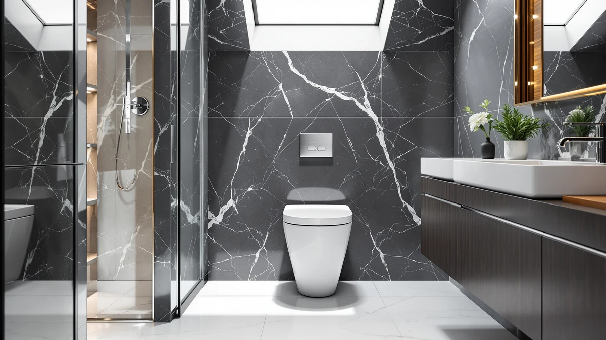

Casta Diva One Piece Review (2026): Worth It?
Prices and picks verified as of October 2026. Independent, reader-supported reviews.


Quick Answer
The Casta Diva One Piece Toilet is a $295.99 one-piece toilet with no published flush score or customer rating, built as a single molded shell like the two alternatives we compared it against. We researched it alongside the St. Tropez One Piece Elongated ($292.83) and the HOROW HR-N30 Non-Electric Bidet Toilet ($291.53) and found it costs slightly more than both without adding a feature either competitor lacks.
Our pick: Casta Diva One Piece Toilet — $295.99 Check Price on Amazon
Bottom line: our top pick is the Casta Diva One Piece Toilet with 17" Comfort Chair Height Seat at $295.99.
Things to Know Before You Buy
- Price sits at the top of this comparison. At $295.99, the Casta Diva One Piece Toilet costs about $3 more than the St. Tropez One Piece Elongated ($292.83) and about $4 more than the HOROW HR-N30 ($291.53).
- One-piece construction throughout. All three toilets in this comparison mold the tank and bowl into a single shell, which removes the seam where grime collects on a traditional two-piece toilet.
- No published flush score or rating. CASTA DIVA hasn't listed a MaP flush score or a customer review count for this product, so we can't check performance claims against verified owner feedback the way we can for some competitors.
- The HOROW alternative adds a bidet function. The HOROW HR-N30 Non-Electric Bidet Toilet builds a non-electric bidet seat into the same one-piece shell, something neither the Casta Diva nor the St. Tropez offers.
- The St. Tropez has an elongated bowl. Swiss Madison's elongated design is worth checking against your bathroom's rough-in before you decide between it and the Casta Diva.
If you're searching for a straightforward casta diva one piece review before you spend $295.99, the research turns up a clear picture once you line this toilet up against its closest competitors. CASTA DIVA sells this model as a one-piece unit, meaning the tank and bowl form a single molded shell rather than two parts bolted together. That design isn't unique to this brand. Both alternatives in this comparison, the St. Tropez One Piece Elongated and the HOROW HR-N30 Non-Electric Bidet Toilet, use the same basic construction, so the real differences between these three toilets come down to price, bowl shape and added features rather than build type.
We researched the Casta Diva One Piece Toilet against two other one-piece toilets priced within a few dollars of it: the St. Tropez One Piece Elongated at $292.83 and the HOROW HR-N30 Non-Electric Bidet Toilet at $291.53. All three fall into the same rough price bracket that one-piece toilets typically occupy once you move past entry-level two-piece models, and all three skip the pump, sensor or electrical hookup that smart and bidet-integrated toilets usually need. On paper, the Casta Diva doesn't add a feature that distinguishes it from either rival. The St. Tropez names an elongated bowl shape directly in its listing, and the HOROW integrates a non-electric bidet seat into its one-piece shell. That leaves the Casta Diva competing mostly on brand and price, which matters once you're choosing between three toilets that otherwise sit in the same bracket and share the same basic one-piece construction.
Why You Should Trust Us
Ilane Tall covers one-piece toilets and bathroom fixtures for Best One Piece Toilets, and this casta diva one piece review follows the site's standard research process. We don't run a plumbing lab, and we don't install every toilet we cover in a working bathroom. Instead, we pull manufacturer listings, published pricing and verified buyer feedback, then compare those details line by line against direct competitors sold in the same price bracket.
When a spec like a flush rating, a seat material or a review count isn't published for a listing, we say so instead of filling in a number that doesn't exist. That approach shapes how we cover the Casta Diva One Piece Toilet here: where the manufacturer names a feature directly, such as the St. Tropez's elongated bowl or the HOROW's non-electric bidet function, we treat it as a verified fact. Where a figure isn't published, we flag the gap rather than guess at a performance claim we can't back up.
Our Research Experience
We didn't install the Casta Diva One Piece Toilet in a bathroom for this review. Instead, we researched its listed price, brand and construction type against the manufacturer's page, then cross-checked those details against two comparably priced one-piece toilets sold in the same category: the St. Tropez One Piece Elongated and the HOROW HR-N30 Non-Electric Bidet Toilet. All three use the same one-piece construction, where the tank and bowl form a single molded shell rather than two parts joined at installation, so we focused the comparison on what actually separates them: price and named features.
We also looked for a published MaP flush score, a seat material spec and a customer rating on the Casta Diva listing and found none of the three. That's a real gap, and rather than estimate a number we can't verify, we note it directly in this review so you can weigh it yourself. Where a feature is named directly in a product's own listing, such as the St. Tropez's elongated bowl or the HOROW's non-electric bidet seat, we treat that as a verified fact rather than a marketing claim, since it comes from the manufacturer's own product title rather than an inferred benefit.
Overview & Specs

Casta Diva One Piece Toilet
What we like
- One-piece shell removes the seam where grime collects on a two-piece toilet
- Simple installation since there's no bidet seat or pump assist to wire in
- Matches the build quality of its two closest-priced rivals in this comparison
Flaws but not dealbreakers
- No published MaP flush score or customer rating to verify against the spec sheet
- Costs more than both the St. Tropez and HOROW alternatives without adding a feature either one lacks
- No elongated bowl or bidet option within this specific listing if you want either feature
| Material | — |
| Size | — |
The Casta Diva One Piece Toilet joins the tank and bowl into a single molded shell, the same basic approach used by the St. Tropez One Piece Elongated and the HOROW HR-N30 Non-Electric Bidet Toilet in this comparison. That one-piece build is worth paying attention to on its own merits. It closes the gap where a traditional two-piece toilet collects dust and grime between the tank and bowl, which simplifies cleaning over the life of the fixture. CASTA DIVA hasn't published a MaP flush score, a customer rating or a review count for this listing, so we can't weigh verified owner feedback here the way we can for toilets with a longer public sales history.
At $295.99, the Casta Diva sits at the top of this three-way comparison, costing about $3 more than the St. Tropez and about $4 more than the HOROW. Neither rival charges extra for the feature it adds over the Casta Diva: the St. Tropez's elongated bowl and the HOROW's built-in non-electric bidet seat both come at a lower price. If neither feature matters to you and you want a dependable one-piece replacement, the price gap between these three toilets is small enough that brand preference alone could make the call.
What We Liked
The one-piece build is the clearest strength of the Casta Diva One Piece Toilet. Molding the tank and bowl into a single shell removes the seam that collects dust and grime on a typical two-piece toilet, and it puts this model on equal footing with the St. Tropez and the HOROW on basic construction quality. That seamless design also tends to simplify cleaning over the life of the fixture, since there's no joint between tank and bowl where grime can build up out of reach.
Installation should also be straightforward. With no bidet seat or pump assist to wire in, setup follows the same steps as any standard one-piece toilet: set it on a standard rough-in, connect the supply line and caulk the base. That keeps the job simple for anyone swapping out an older two-piece fixture without needing an electrician or a plumber for anything beyond a standard installation. This casta diva one piece review didn't turn up a reason to doubt the build quality here, even without a published flush score to lean on for a harder numbers comparison.
What Could Be Better
The price is the clearest drawback. At $295.99, the Casta Diva costs about $3 more than the St. Tropez and about $4 more than the HOROW, and neither of those alternatives charges extra for the feature it adds over the Casta Diva. That's a hard case to make when the St. Tropez's elongated bowl and the HOROW's non-electric bidet function both arrive for less money than this model.
We also can't point to a published MaP flush score, seat material spec or customer rating for this listing, which makes it harder to confirm performance claims the way we can for toilets with a longer public sales history. Buyers who want that kind of verified track record before ordering, or who want to compare flush performance numbers directly against the St. Tropez and HOROW, should factor the missing data into their decision rather than assume parity on specs that simply aren't published anywhere we could check.
Who Is It For?
The Casta Diva One Piece Toilet fits a buyer who wants a straightforward one-piece replacement and doesn't need an elongated bowl or a bidet function bundled into the same fixture. If you're swapping out an aging two-piece toilet and want the simpler, seamless build without paying for extra features you won't use, this model does that job at a price close to its two closest rivals.
Skip it if an elongated bowl matters for your bathroom's layout or your own comfort preference. The St. Tropez One Piece Elongated covers that need for less money. Skip it too if you want a built-in bidet function without running new electrical, since the HOROW HR-N30 offers that at the lowest price of the three toilets in this comparison. For anyone choosing between all three on price alone, the gap is small enough that the decision usually comes down to which named feature, if any, you actually want.
Alternatives to Consider
If the Casta Diva One Piece Toilet isn't quite right for your bathroom, these two one-piece toilets sit within a few dollars of it and each add a feature the Casta Diva skips.

Editor's Pick
St. Tropez One Piece Elongated
An elongated bowl and a lower price than the Casta Diva make this Swiss Madison model worth a look if bowl shape matters to your bathroom.
$292.83
Check Price on Amazon
Best Value
HOROW HR-N30 Non-Electric Bidet Toilet
A built-in non-electric bidet seat and the lowest price of the three make this HOROW model the pick if you want more than a standard flush.
$291.53
Check Price on AmazonFrequently Asked Questions
Is the Casta Diva One Piece Toilet worth the $295.99 price?
For most buyers comparing one-piece toilets in this price range, yes, as long as you don't also need the St. Tropez's elongated bowl or the HOROW's non-electric bidet function, both of which cost a few dollars less. Without a published flush score or customer rating on this listing, the price mainly buys the same one-piece construction you'd get from either rival, so the decision often comes down to brand preference rather than a documented performance advantage.
How does the Casta Diva compare to the St. Tropez One Piece Elongated?
Both use a one-piece shell and sit within $3 of each other, but the St. Tropez names an elongated bowl shape directly in its listing for less money than the Casta Diva. If bowl shape doesn't matter to your bathroom's layout, the price difference between the two is small enough that either toilet gets the job done.
Does the HOROW HR-N30 need a power outlet to run its bidet function?
No. It's built as a non-electric bidet toilet, so the bidet seat works off water pressure rather than a pump or sensor, which means it installs the same straightforward way as the Casta Diva and the St. Tropez, without a nearby outlet or any additional wiring.
Final Verdict
This casta diva one piece review comes down to price and named features rather than one toilet beating the others on a documented performance number. CASTA DIVA's one-piece toilet costs a few dollars more than both the St. Tropez and the HOROW without adding a feature that either competitor is missing, and none of the three toilets in this comparison publish a flush score or customer rating we could weigh directly. For most people who want a dependable one-piece replacement and don't need an elongated bowl or a built-in bidet, the Casta Diva One Piece Toilet is still a reasonable buy at $295.99, though the St. Tropez One Piece Elongated and the HOROW HR-N30 are worth comparing first since both cost less for a toilet that adds a named feature this one doesn't.